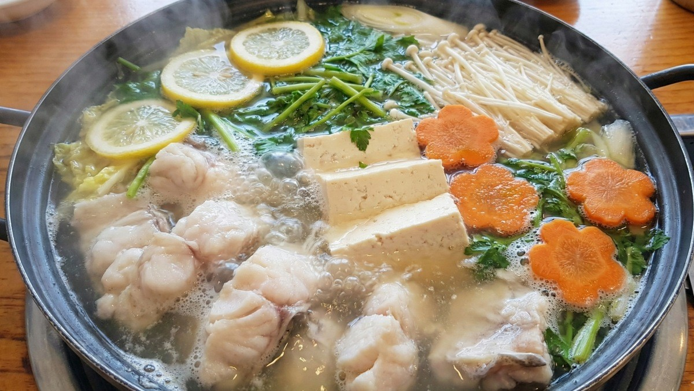

안녕하세요! 오늘은 2TV 생생정보 '스타 밥집' 코너에서 가수 설운도가 직접 추천한 경기 양평의 숨은 맛집 야산해촌 본점을 소개해드리려고 합니다.
양평에서 14년째 살고 있는 설운도가 현지인 단골 맛집으로 꼽은 이곳! 시그니처 메뉴는 바로 제철 신선한 재료로 끓여낸 "생대구맑은탕"입니다.
| 메뉴 | 특징 |
|---|---|
| 🥇 생대구맑은탕 | 신선한 생대구로 끓여낸 맑고 시원한 국물, 대표 시그니처 메뉴 |
| 생선조림 | 양념이 잘 배어든 매콤달콤한 생선조림 |
| 회무침 | 싱싱한 회와 아삭한 채소의 새콤달콤 조화 |
| 지리탕 | 맑고 담백한 국물이 일품인 보양식 |
| 오징어 소면 | 쫄깃한 오징어와 소면의 시원한 조합 |
| 밀면 | 부드러운 면발과 깔끔한 육수의 별미 |
"국물이 정말 시원하고 깊어요. 대구살도 부드럽고 푸짐하게 나와서 양평 올 때마다 꼭 들르는 곳입니다. 설운도 씨가 추천할 만하네요!"
자가용: 서울에서 중부내륙고속도로 또는 6번 국도 이용, 양평 방면
대중교통: 경의중앙선 양평역 하차 후 버스 또는 택시 이용
주차: 자체 주차 가능
※ 본 포스팅은 KBS 2TV 생생정보 방송 내용을 기반으로 작성되었습니다. 방문 전 영업시간과 메뉴를 확인해주세요.